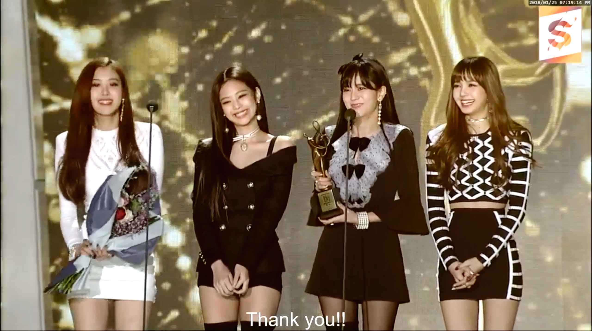

<!DOCTYPE html>
<html>
<title>More about BLACKPINK</title>
<body background="bg5.jpg">
</body>
</html>
<head><title>Music - World of Music</title></head>
<font size="5" face="arial" color="white">
<head>
<header>


</header>
<hr>
<nav> 
<table cellspacing="5" cellpadding="5">
<tr>H
<td><a href="index.html">Home</a></td>
<td><a href="Artists.html">Artists</a></td>
<td><a href="Artists.html">Jisoo</a></td>
<td><a href="Artists.html">Jennie</a></td>
<td><a href="Artists.html">Rose</a></td>
<td><a href="Artists.html">Lisa</a></td>
<td><a href="Fav Songs.html">Fav Songs</a></td>
<td><a href="Artists.html">Awards</a></td>
</tr>
</table>
</nav>
<hr>
<h2>Welcome to World to Music!</h2>

<p>
World of music- Music is a must thing in our lives. So do I! Here, in this website, I want to share some of my fav artists and song.
</p>


<p><strong>Artists</strong></p>
<hr>
<footer>
<li>Blackpink is a korean pop music girl group created by YG entertaiment.</li>
<li>Blackpink was debuted in 2016.</li>
<li>Blackpink has 4 band memebers: Jisoo Kim, Jennie Kim, Rose Park, La Lisa</li>
<li>Blackpink had archieved so many goals and won awards.</li>
<li>Blackpink has over 90M subsribers in youtube and many streamers on many music platforms.</li>
<li>Blackpink's members has each solo debut.</li>

<p><strong>Jisoo</strong></p>
<hr>

<footer>
<li>Kim Ji-soo (Korean: 김지수), better known as Jisoo, is a South Korean singer, songwriter, and actress.</li>
<li>She made her debut in August 2016 as a member of the girl group Blackpink under YG Entertainment as a lead vocalist & visualist.</li>
<li>Nicknames: Jichu/ Soyaa/ Kim Turtle Rabbit/ Chi Choo</li>
<li>Birthday: Jan 3, 1995</li>
<li>Age: 28 (internationally)</li>
<li>Height: 162 cm</li>
<li>Nationality: Korea</li>
<li>Solo: Flower, All Eyes on Me(2023)</li>


<p><strong>Jennie</strong></p>
<hr>

<footer>
<li>Jennie Kim (Korean: 김제니), better known as Jennie, is a South Korean singer, songwriter, and rapper.</li>
<li>She made her debut in August 2016 as a member of the girl group Blackpink under YG Entertainment as a main rapper & lead dancer.</li>
<li>Nicknames: Nini, Jendeukie</li>
<li>Birthday: Jan 6, 1996</li>
<li>Age: 27 (internationally)</li>
<li>Height: 163 cm</li>
<li>Nationality: Korea</li>
<li>Solo: Solo (2018)</li>

<p><strong>Rose</strong></p>
<hr>

<footer>
<li>Roseanne Park, better known as Rosé (Korean: 로제), is a Korean-New Zealand singer, dancer, and model, based in South Korea.</li>
<li>She made her debut in August 2016 as a member of the girl group Blackpink under YG Entertainment as a main vocalist.</li>
<li>Nicknames: Rose, Rosie</li>
<li>Birthday: Feb 11, 1997</li>
<li>Age: 26 (internationally)</li>
<li>Height: 168.7 cm</li>
<li>Nationality: Korea</li>
<li>Solo: Gone, On the ground(2021)</li>

<p><strong>Lisa</strong></p>
<hr>

<footer>
<li>Lalisa Manoban(Thai: ปราณปรียา มโนบาล)], better known by the mononym Lisa (Korean: 리사), is a Thai rapper, singer, and dancer based in South Korea.</li>
<li>She made her debut in August 2016 as a member of the girl group Blackpink under YG Entertainment as a lead rapper and dancer.</li>
<li>Nicknames: Lili, Lalice, Laliz, Pokpak</li>
<li>Birthday: Mar 27, 1997</li>
<li>Age: 26 (internationally)</li>
<li>Height: 166.5 cm</li>
<li>Nationality: Thailand</li>
<li>Solo: Lalisa, Money (2022)</li>

<p><strong>Awards</strong></p>
<hr>

<footer>
<li>Blackpink had won 100 awards out of 330 nominations.</li>
<li>Jennie debuted her solo in 2018 and won 16 awards out of 32 nominations.</li>
<li>Rose debuted her solo in 2021 and won 6 times.</li>
<li>Lisa debuted her solo in 2022 and won 7 times including Guinness World Record and MTV awards.</li>
<li>Jisoo debuted her solo in 2023 and won 5 times out of 12 nominations.</li>
<li>Blackpink world tour was succeedded in 22 countries over the world.</li>

<p><strong> Fav of BLACKPINK songs</strong></p>
<hr>
<footer>

<body link="sky blue">
<li><a href="https://www.youtube.com/watch?v=IHNzOHi8sJs">
Copyright &copy; Blackpink youtube channel BLACKPINK - ‘뚜두뚜두 (DDU-DU DDU-DU)’ M/V</li>


<body link="white">
<li><a href="https://www.youtube.com/watch?v=2S24-y0Ij3Y">
Copyright &copy; Blackpink youtube channel BLACKPINK - 'Kill This Love' M/V</li>


<body link="sky blue">
<li><a href="https://www.youtube.com/watch?v=POe9SOEKotk">
Copyright &copy; Blackpink youtube channel BLACKPINK - ‘Shut Down’ M/V</li>


<body link="sky blue">
<li><a href="https://www.youtube.com/watch?v=YudHcBIxlYw">
Copyright &copy; Blackpink youtube channel BLACKPINK - ‘Flower’ M/V</li>


<body link="sky blue">
<li><a href="https://www.youtube.com/watch?v=b73BI9eUkjM">
Copyright &copy; Blackpink youtube channel BLACKPINK - ‘Solo’ M/V</li>


<body link="sky blue">
<li><a href="https://www.youtube.com/watch?v=CKZvWhCqx1s">
Copyright &copy; Blackpink youtube channel BLACKPINK - ‘On the ground’ M/V</li>


<body link="sky blue">
<li><a href="https://www.youtube.com/watch?v=awkkyBH2zEo">
Copyright &copy; Blackpink youtube channel BLACKPINK - ‘Lalisa’ M/V</li>
</footer>
</body>

